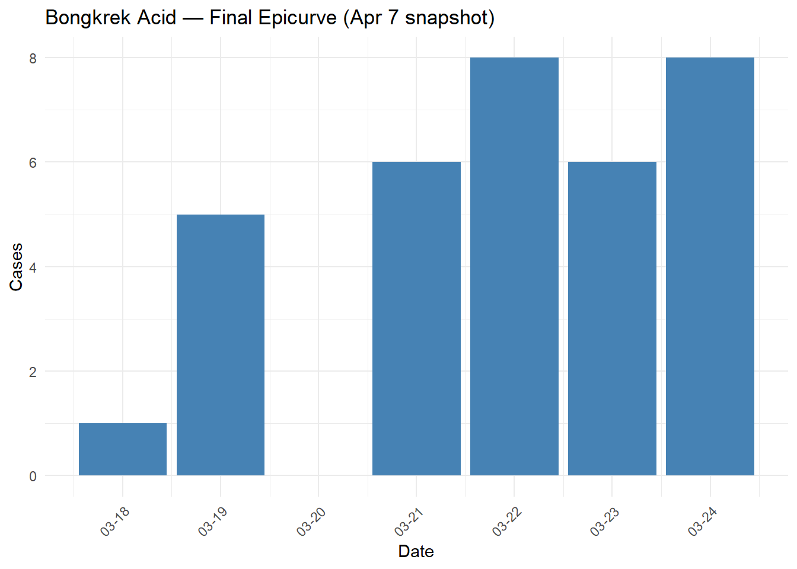
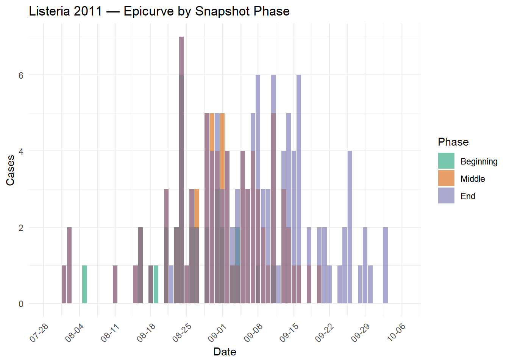
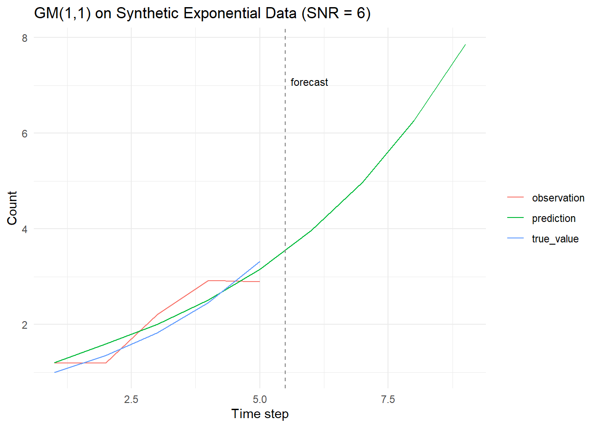
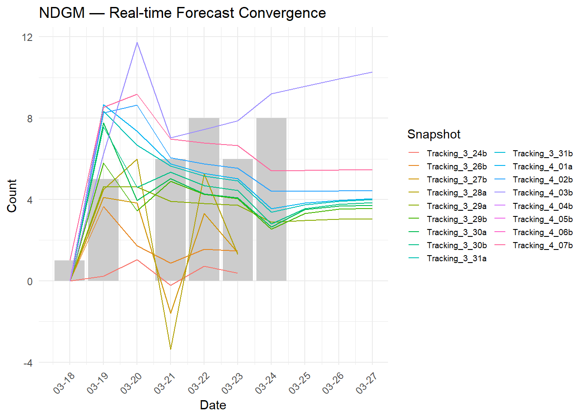
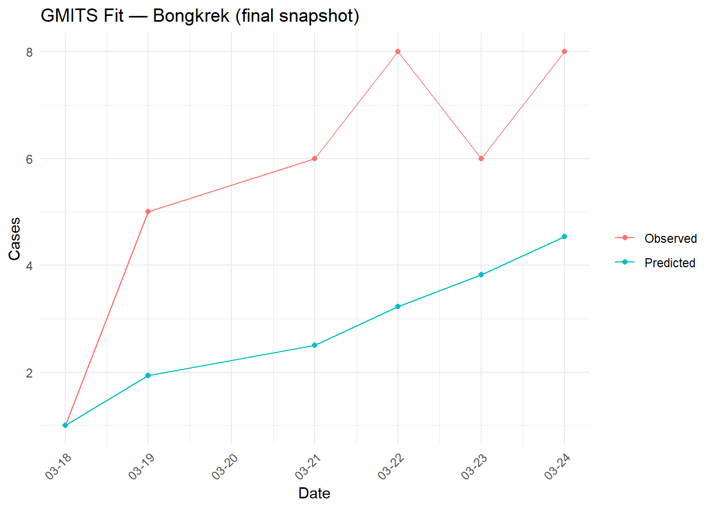
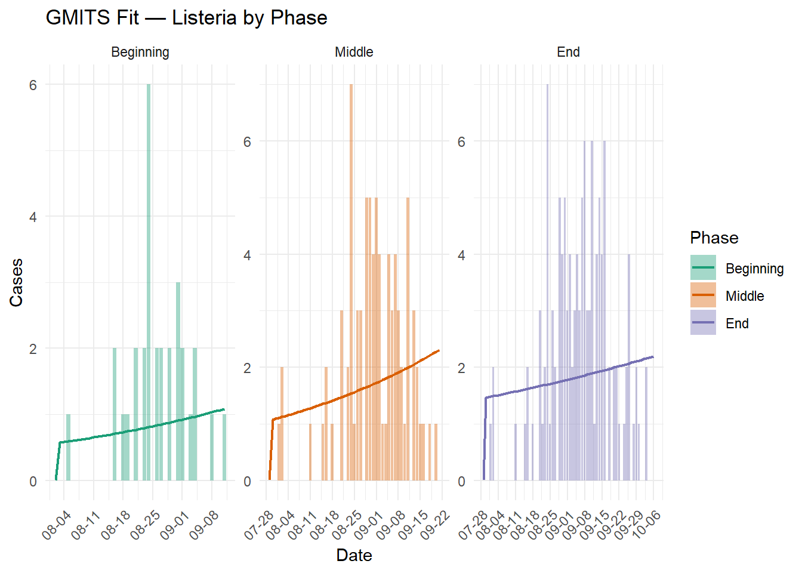
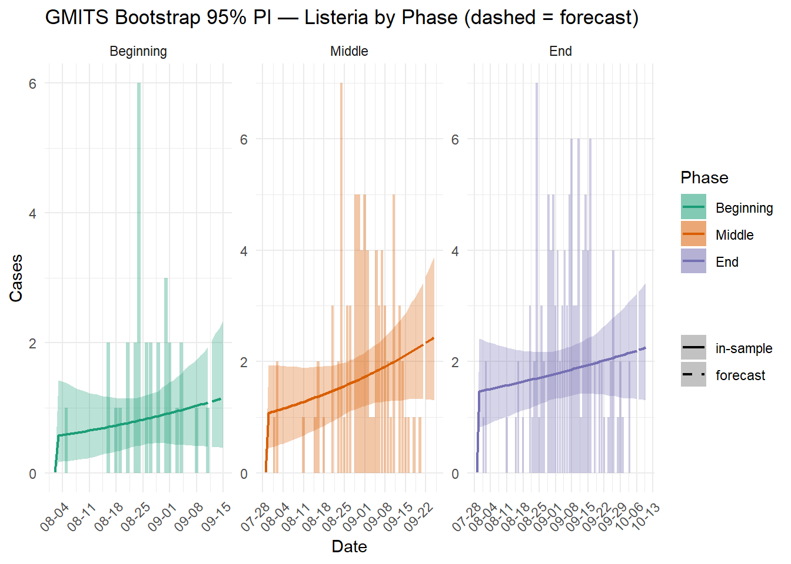
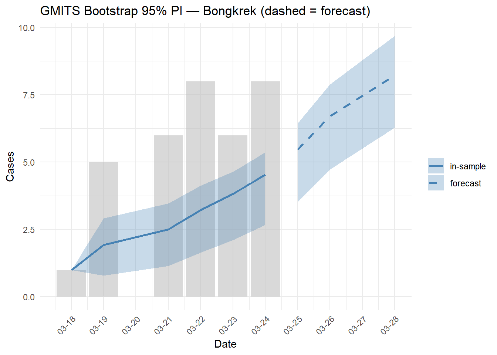
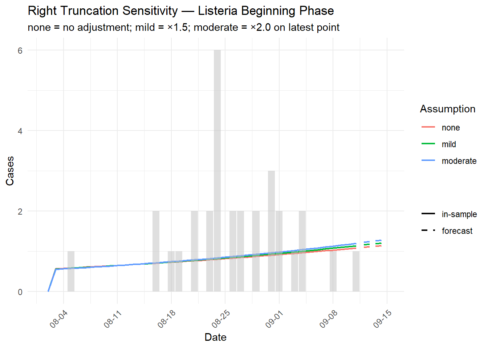

mae <- function(actual, predicted) {
mean(abs(actual - predicted), na.rm = TRUE)
}
mape <- function(actual, predicted) {
valid <- actual != 0
mean(
abs((actual[valid] - predicted[valid]) / actual[valid]),
na.rm = TRUE
) * 100
}# n_ahead: out-of-sample steps to forecast using mean(delta_t) as step size.
# Returns $x0_future when n_ahead > 0.
gmits <- function(count, date, n_ahead = 0) {
valid <- !is.na(count) & !is.na(date)
x0 <- count[valid]
date <- date[valid]
if (length(x0) < 2) {
warning("Not enough valid data points for modeling.")
return(NULL)
}
if (x0[1] == 0) x0[1] <- 1e-3
n <- length(x0)
delta_t <- as.numeric(
difftime(date[2:n], date[1:(n - 1)], units = "days")
)
time_index <- cumsum(c(0, delta_t))
# Time-weighted AGO: first point as anchor, rest scaled by interval
x1 <- cumsum(c(x0[1], x0[2:n] * delta_t))
z <- 0.5 * (x1[2:n] + x1[1:(n - 1)])
B <- cbind(-z * delta_t, delta_t)
Y <- x0[2:n]
W <- diag(delta_t)
p <- solve(t(B) %*% W %*% B) %*% t(B) %*% W %*% Y
a_hat <- p[1]
b_hat <- p[2]
# Analytical solution: x1 trajectory, then IAGO back to period counts
x1_hat <- c(
x1[1],
(x1[1] - b_hat / a_hat) *
exp(-a_hat * (time_index[-1] - time_index[1])) +
b_hat / a_hat
)
x0_hat <- c(x0[1], diff(x1_hat) / delta_t)
result <- list(
a = a_hat, b = b_hat,
x1_hat = x1_hat, x0_hat = x0_hat
)
# Out-of-sample forecast: step forward using mean reporting interval
if (n_ahead > 0) {
dt_mean <- mean(delta_t)
t_future <- time_index[n] + cumsum(rep(dt_mean, n_ahead))
x1_fut <- (x1[1] - b_hat / a_hat) *
exp(-a_hat * (t_future - time_index[1])) + b_hat / a_hat
result$x0_future <- c(
(x1_fut[1] - x1_hat[n]) / dt_mean,
diff(x1_fut) / dt_mean
)
}
result
}ndgm <- function(count, date, ahead = 4) {
x0 <- count
if (x0[1] == 0) x0[1] <- 1e-3
x1 <- cumsum(x0)
n <- length(x0)
delta_t <- as.numeric(
difftime(date[2:n], date[1:(n - 1)], units = "days")
)
time_index <- cumsum(c(0, delta_t))
B <- cbind(
matrix(x1[1:(n - 1)], ncol = 1),
matrix(time_index[1:(n - 1)], ncol = 1),
matrix(1, nrow = n - 1, ncol = 1)
)
beta <- solve(t(B) %*% B) %*% t(B) %*% matrix(x1[2:n], ncol = 1)
b1 <- beta[1, 1]
b2 <- beta[2, 1]
b3 <- beta[3, 1]
k_all <- c(
time_index,
max(time_index) + cumsum(rep(mean(delta_t), ahead))
)
x1cap <- numeric(length(k_all))
for (i in seq_along(k_all)) {
k <- k_all[i]
sm <- sum((1:i) * b1^(k - k_all[1:i]))
x1cap[i] <- b1^k * x1[1] +
b2 * sm + ((1 - b1^k) / (1 - b1)) * b3
}
c(x0[1], diff(x1cap))
}# Scales the most recent n_recent counts by scale_factor before passing to gmits().
truncation_adjust <- function(count, n_recent = 1, scale_factor = 1.5) {
n <- length(count)
adj <- count
idx <- tail(seq_len(n), n_recent)
adj[idx] <- count[idx] * scale_factor
adj
}# n_ahead > 0: point/lower/upper each extend to n + n_ahead;
# last n_ahead entries are the out-of-sample prediction interval.
gmits_boot <- function(count, date, n_boot = 1000, ci = 0.95, n_ahead = 0) {
base <- gmits(count, date, n_ahead = n_ahead)
if (is.null(base)) return(NULL)
valid <- !is.na(count) & !is.na(date)
x0 <- count[valid]
dv <- date[valid]
n <- length(x0)
resid_pool <- (x0 - base$x0_hat)[2:n]
n_out <- n + n_ahead
boot_mat <- replicate(n_boot, {
e_boot <- sample(resid_pool, n - 1, replace = TRUE)
x0_boot <- c(x0[1], pmax(base$x0_hat[2:n] + e_boot, 0))
res <- tryCatch(
gmits(x0_boot, dv, n_ahead = n_ahead),
error = function(e) NULL
)
if (is.null(res)) return(rep(NA_real_, n_out))
c(res$x0_hat, if (n_ahead > 0) res$x0_future else NULL)
})
alpha <- (1 - ci) / 2
list(
point = c(base$x0_hat,
if (n_ahead > 0) base$x0_future else NULL),
lower = apply(boot_mat, 1, quantile, probs = alpha, na.rm = TRUE),
upper = apply(boot_mat, 1, quantile, probs = 1 - alpha, na.rm = TRUE),
a = base$a,
b = base$b
)
}6 exposure dates, 17 linelist snapshots (Mar 24 – Apr 7). Point-source food poisoning; cases are not transmissible.
df_bongkrek <- data.frame(
Date = as.Date(c(
"2024/3/18", "2024/3/19", "2024/3/21",
"2024/3/22", "2024/3/23", "2024/3/24"
)),
Tracking_4_07b = c(1, 5, 6, 8, 6, 8),
Tracking_4_06b = c(1, 5, 6, 8, 6, 8),
Tracking_4_05b = c(1, 5, 6, 8, 6, 8),
Tracking_4_04b = c(0, 5, 6, 8, 6, 8),
Tracking_4_03b = c(0, 5, 6, 7, 6, 8),
Tracking_4_02b = c(0, 5, 6, 7, 6, 6),
Tracking_4_01a = c(0, 5, 6, 7, 5, 6),
Tracking_3_31b = c(0, 5, 6, 7, 5, 6),
Tracking_3_31a = c(0, 5, 5, 7, 5, 6),
Tracking_3_30b = c(0, 4, 4, 7, 5, 5),
Tracking_3_30a = c(0, 4, 4, 7, 5, 4),
Tracking_3_29b = c(0, 2, 4, 6, 5, 4),
Tracking_3_29a = c(0, 2, 4, 4, 4, 4),
Tracking_3_28a = c(0, 2, 4, 4, 4, 0),
Tracking_3_27b = c(0, 2, 3, 3, 3, 0),
Tracking_3_26b = c(0, 2, 2, 2, 3, 0),
Tracking_3_24b = c(0, 0, 0, 2, 0, 0)
)
snapshot_cols <- grep("^Tracking", names(df_bongkrek), value = TRUE)
# Ordered from earliest to latest tracking date
snapshot_cols <- rev(snapshot_cols)df_bongkrek |>
select(Date, Tracking_4_07b) |>
rename(Case = Tracking_4_07b) |>
ggplot(aes(Date, Case)) +
geom_col(fill = "steelblue") +
scale_x_date(date_labels = "%m-%d", date_breaks = "1 day") +
theme_minimal() +
theme(axis.text.x = element_text(angle = 45, hjust = 1)) +
labs(title = "Bongkrek Acid — Final Epicurve (Apr 7 snapshot)",
x = "Date", y = "Cases")
Multiple weekly snapshots; ongoing foodborne transmission (person-to-person spread possible). Three representative snapshots are selected by cumulative case percentage of the final total (targets: ~20%, 50%, 80%).
wd <- "d:/RA/Listeria/data mdy"
files <- list.files(wd, pattern = "\\.csv$", full.names = FALSE)
listeria <- map_df(
files,
~ read_csv(
file.path(wd, .x),
show_col_types = FALSE
) |>
mutate(Snapshot = str_remove(.x, "\\.csv$"))
) |>
pivot_wider(
id_cols = Date,
names_from = Snapshot,
values_from = Count
) |>
mutate(Date = as.Date(Date))
# Select snapshots by cumulative case % of final total
snapshot_totals <- listeria |>
select(-Date) |>
summarise(across(everything(), \(x) sum(x, na.rm = TRUE))) |>
pivot_longer(
everything(),
names_to = "Snapshot",
values_to = "Total"
) |>
mutate(Pct = Total / max(Total) * 100)
pick_snap <- function(target) {
snapshot_totals$Snapshot[
which.min(abs(snapshot_totals$Pct - target))
]
}
snap_beginning <- pick_snap(20)
snap_middle <- pick_snap(50)
snap_end <- pick_snap(80)
make_phase <- function(snap, label) {
listeria |>
select(Date, all_of(snap)) |>
rename_with(\(x) "Case", all_of(snap)) |>
drop_na() |>
mutate(Phase = label)
}
lst_beginning <- make_phase(snap_beginning, "Beginning")
lst_middle <- make_phase(snap_middle, "Middle")
lst_end <- make_phase(snap_end, "End")
lst_combined <- bind_rows(lst_beginning, lst_middle, lst_end) |>
mutate(
Phase = factor(Phase, levels = c("Beginning", "Middle", "End")),
Date = as.Date(Date)
)snapshot_totals |>
filter(Snapshot %in% c(snap_beginning, snap_middle, snap_end)) |>
mutate(
Phase = case_when(
Snapshot == snap_beginning ~ "Beginning",
Snapshot == snap_middle ~ "Middle",
Snapshot == snap_end ~ "End"
),
Phase = factor(Phase, levels = c("Beginning", "Middle", "End")),
Pct = round(Pct, 1)
) |>
arrange(Phase) |>
select(Phase, Snapshot, Total, Pct) |>
kable(
col.names = c("Phase", "Snapshot", "Total Cases", "% of Final"),
caption = "Selected Listeria Snapshots by Cumulative Case %"
)| Phase | Snapshot | Total Cases | % of Final |
|---|---|---|---|
| Beginning | 091911A | 31 | 21.1 |
| Middle | 093011A | 83 | 56.5 |
| End | 101811A | 123 | 83.7 |
phase_colors <- c(
Beginning = "#1b9e77",
Middle = "#d95f02",
End = "#7570b3"
)
ggplot(lst_combined, aes(Date, Case, fill = Phase)) +
geom_col(alpha = 0.6, position = "identity") +
scale_fill_manual(values = phase_colors) +
scale_x_date(date_labels = "%m-%d", date_breaks = "7 days") +
theme_minimal() +
theme(axis.text.x = element_text(angle = 45, hjust = 1)) +
labs(title = "Listeria 2011 — Epicurve by Snapshot Phase",
x = "Date", y = "Cases")
Validates GM(1,1) behaviour on synthetic exponential-growth data with known parameters and added noise.
set.seed(5656)
a_true <- 0.3
n_obs <- 5
t_seq <- seq(1, n_obs)
s_true <- exp(a_true * (t_seq - 1))
x_obs <- s_true + rnorm(n_obs, 0, sd = sqrt(0.1))
snr <- var(s_true) / var(x_obs - s_true)
df_synth <- data.frame(
true_value = s_true,
observation = x_obs
) |>
add_row(
true_value = rep(NA, 4),
observation = rep(NA, 4)
) |>
mutate(
prediction = gm11(x_obs),
time_step = seq_len(n_obs + 4)
)df_synth |>
pivot_longer(
c(observation, prediction, true_value),
names_to = "type",
values_to = "value"
) |>
ggplot(aes(time_step, value, color = type)) +
geom_line() +
geom_vline(xintercept = n_obs + 0.5, linetype = "dashed",
color = "grey50") +
annotate("text", x = n_obs + 0.6, y = max(df_synth$prediction,
na.rm = TRUE) * 0.9,
label = "forecast", hjust = 0, size = 3) +
theme_minimal() +
labs(
title = paste0("GM(1,1) on Synthetic Exponential Data (SNR = ",
round(snr, 1), ")"),
x = "Time step", y = "Count", color = ""
)
data.frame(
MAE = mae(df_synth$true_value, df_synth$prediction),
MAPE = mape(df_synth$true_value, df_synth$prediction)
) |>
kable(digits = 3, caption = "GM(1,1) in-sample error (synthetic)")| MAE | MAPE |
|---|---|
| 0.168 | 11.001 |
Each tracking-date snapshot is modelled independently with a 4-step-ahead forecast, illustrating how predictions converge as data accumulate.
ndgm_list <- lapply(snapshot_cols, function(col) {
pred <- ndgm(df_bongkrek[[col]], df_bongkrek$Date, ahead = 4)
data.frame(
Predicted = pred,
Snapshot = col,
Date = seq.Date(
min(df_bongkrek$Date),
by = "day",
length.out = length(pred)
)
)
})
df_ndgm_bongkrek <- bind_rows(ndgm_list)ggplot() +
geom_col(
data = df_bongkrek,
aes(Date, Tracking_4_07b),
fill = "grey80"
) +
geom_line(
data = df_ndgm_bongkrek,
aes(Date, Predicted, color = Snapshot)
) +
scale_x_date(date_labels = "%m-%d", date_breaks = "1 day") +
guides(color = guide_legend(ncol = 2)) +
theme_minimal() +
theme(
axis.text.x = element_text(angle = 45, hjust = 1),
legend.text = element_text(size = 7),
legend.key.size = unit(0.4, "cm")
) +
labs(
title = "NDGM — Real-time Forecast Convergence",
x = "Date", y = "Count", color = "Snapshot"
)
GMITS is fitted independently to each snapshot; error metrics are compared across epidemic stages.
# Bongkrek snapshots encode unreported cases as 0, not NA.
# For sequential forecasting, 0 means "not yet attributed in this snapshot"
# and must be treated as missing — otherwise gmits() fits through spurious zeros.
# Snapshots with fewer than 4 valid (non-zero) observations are skipped.
gmits_bongkrek <- lapply(snapshot_cols, function(col) {
obs_raw <- df_bongkrek[[col]]
obs <- na_if(obs_raw, 0L) # 0 → NA: not yet attributed
if (sum(!is.na(obs)) < 4) return(NULL) # need ≥4 points for GM(1,1)
res <- gmits(obs, df_bongkrek$Date)
if (is.null(res)) return(NULL)
valid <- !is.na(obs)
data.frame(
Snapshot = col,
n_valid = sum(valid),
MAE = mae(obs[valid], res$x0_hat),
MAPE = mape(obs[valid], res$x0_hat),
a = res$a,
b = res$b
)
}) |>
bind_rows()# Final snapshot has no zeros; na_if() is a no-op here but kept for consistency.
final_snap <- "Tracking_4_07b"
obs_final <- na_if(df_bongkrek[[final_snap]], 0L)
res_final <- gmits(obs_final, df_bongkrek$Date)
data.frame(
Date = df_bongkrek$Date[!is.na(obs_final)],
Observed = obs_final[!is.na(obs_final)],
Predicted = res_final$x0_hat
) |>
pivot_longer(c(Observed, Predicted),
names_to = "type", values_to = "value") |>
ggplot(aes(Date, value, color = type)) +
geom_line() +
geom_point() +
scale_x_date(date_labels = "%m-%d", date_breaks = "1 day") +
theme_minimal() +
theme(axis.text.x = element_text(angle = 45, hjust = 1)) +
labs(
title = "GMITS Fit — Bongkrek (final snapshot)",
x = "Date", y = "Cases", color = ""
)
lst_phases <- list(
Beginning = lst_beginning,
Middle = lst_middle,
End = lst_end
)
phase_levels <- c("Beginning", "Middle", "End")
# Fit once; extract error metrics and fitted values from the same run.
listeria_fits <- lapply(names(lst_phases), function(phase) {
df <- lst_phases[[phase]]
res <- gmits(df$Case, df$Date)
if (is.null(res)) return(NULL)
list(
errors = data.frame(
Phase = phase,
n_points = nrow(df),
MAE = mae(df$Case, res$x0_hat),
MAPE = mape(df$Case, res$x0_hat),
a = res$a,
b = res$b
),
fit = data.frame(
Date = df$Date,
Observed = df$Case,
Predicted = res$x0_hat,
Phase = phase
)
)
})
gmits_listeria <- bind_rows(lapply(listeria_fits, `[[`, "errors")) |>
mutate(Phase = factor(Phase, levels = phase_levels))
df_lst_fit <- bind_rows(lapply(listeria_fits, `[[`, "fit")) |>
mutate(Phase = factor(Phase, levels = phase_levels))ggplot(df_lst_fit, aes(Date)) +
geom_col(aes(y = Observed, fill = Phase), alpha = 0.4) +
geom_line(aes(y = Predicted, color = Phase), linewidth = 0.8) +
scale_fill_manual(values = phase_colors) +
scale_color_manual(values = phase_colors) +
scale_x_date(date_labels = "%m-%d", date_breaks = "7 days") +
facet_wrap(~Phase, scales = "free") +
theme_minimal() +
theme(axis.text.x = element_text(angle = 45, hjust = 1)) +
labs(
title = "GMITS Fit — Listeria by Phase",
x = "Date", y = "Cases"
)
# n_ahead = 4: produce prediction interval for 4 steps beyond each snapshot.
# The first n rows are in-sample; the last 4 are the out-of-sample forecast PI.
n_fwd <- 4
boot_list <- lapply(names(lst_phases), function(phase) {
df <- lst_phases[[phase]]
res <- gmits_boot(df$Case, df$Date, n_boot = 1000, n_ahead = n_fwd)
if (is.null(res)) return(NULL)
n_obs <- nrow(df)
dt_mean <- mean(as.numeric(diff(df$Date)))
data.frame(
Date = c(df$Date,
df$Date[n_obs] + round(dt_mean * seq_len(n_fwd))),
Point = res$point,
Lower = res$lower,
Upper = res$upper,
Forecast = c(rep(FALSE, n_obs), rep(TRUE, n_fwd)),
Phase = phase
)
})
df_boot <- bind_rows(boot_list) |>
mutate(Phase = factor(Phase, levels = c("Beginning", "Middle", "End")))ggplot(df_boot, aes(Date)) +
geom_col(
data = df_lst_fit |> select(Date, Observed, Phase),
aes(y = Observed, fill = Phase),
alpha = 0.35
) +
geom_ribbon(
aes(ymin = Lower, ymax = Upper, fill = Phase, linetype = Forecast),
alpha = 0.3
) +
geom_line(
aes(y = Point, color = Phase, linetype = Forecast),
linewidth = 0.8
) +
scale_fill_manual(values = phase_colors) +
scale_color_manual(values = phase_colors) +
scale_linetype_manual(
values = c("FALSE" = "solid", "TRUE" = "dashed"),
labels = c("FALSE" = "in-sample", "TRUE" = "forecast")
) +
scale_x_date(date_labels = "%m-%d", date_breaks = "7 days") +
facet_wrap(~Phase, scales = "free") +
theme_minimal() +
theme(axis.text.x = element_text(angle = 45, hjust = 1)) +
labs(
title = "GMITS Bootstrap 95% PI — Listeria by Phase (dashed = forecast)",
x = "Date", y = "Cases", linetype = ""
)
# Final (most complete) Bongkrek snapshot; forecast 3 daily steps ahead.
obs_boot <- na_if(df_bongkrek[["Tracking_4_07b"]], 0L)
dates_b <- df_bongkrek$Date[!is.na(obs_boot)]
n_obs_b <- length(dates_b)
dt_b <- mean(as.numeric(diff(dates_b)))
res_bong_boot <- gmits_boot(
obs_boot, df_bongkrek$Date,
n_boot = 1000, n_ahead = 3
)
df_bong_boot <- data.frame(
Date = c(dates_b,
tail(dates_b, 1) + round(dt_b * seq_len(3))),
Point = res_bong_boot$point,
Lower = res_bong_boot$lower,
Upper = res_bong_boot$upper,
Forecast = c(rep(FALSE, n_obs_b), rep(TRUE, 3))
)ggplot(df_bong_boot, aes(Date)) +
geom_col(
data = df_bongkrek,
aes(y = Tracking_4_07b),
fill = "grey75", alpha = 0.6
) +
geom_ribbon(
aes(ymin = Lower, ymax = Upper, linetype = Forecast),
fill = "steelblue", alpha = 0.3
) +
geom_line(
aes(y = Point, linetype = Forecast),
color = "steelblue", linewidth = 0.9
) +
scale_linetype_manual(
values = c("FALSE" = "solid", "TRUE" = "dashed"),
labels = c("FALSE" = "in-sample", "TRUE" = "forecast")
) +
scale_x_date(date_labels = "%m-%d", date_breaks = "1 day") +
theme_minimal() +
theme(axis.text.x = element_text(angle = 45, hjust = 1)) +
labs(
title = "GMITS Bootstrap 95% PI — Bongkrek (dashed = forecast)",
x = "Date", y = "Cases", linetype = ""
)
Compares GMITS predictions under different right truncation
assumptions, where recent counts are systematically underreported.
truncation_adjust() multiplies the latest
n_recent observations by scale_factor as a
sensitivity pre-processing step.
# Compare GMITS fit under three truncation assumptions for Listeria Beginning phase.
df_rt <- lst_beginning
scales <- c(none = 1.0, mild = 1.5, moderate = 2.0)
rt_results <- lapply(names(scales), function(nm) {
adj <- truncation_adjust(df_rt$Case, n_recent = 1,
scale_factor = scales[[nm]])
res <- gmits(adj, df_rt$Date, n_ahead = 4)
if (is.null(res)) return(NULL)
n_obs <- nrow(df_rt)
dt_rt <- mean(as.numeric(diff(df_rt$Date)))
data.frame(
Date = c(df_rt$Date,
df_rt$Date[n_obs] + round(dt_rt) * (1:4)),
Predicted = c(res$x0_hat, res$x0_future),
Assumption = nm,
Forecast = c(rep(FALSE, n_obs), rep(TRUE, 4))
)
})
df_rt_all <- bind_rows(rt_results) |>
mutate(Assumption = factor(Assumption, levels = names(scales)))ggplot(df_rt_all, aes(Date, Predicted,
color = Assumption, linetype = Forecast)) +
geom_line(linewidth = 0.8) +
geom_col(
data = df_rt,
aes(Date, Case),
inherit.aes = FALSE,
fill = "grey75", alpha = 0.5
) +
scale_linetype_manual(
values = c("FALSE" = "solid", "TRUE" = "dashed"),
labels = c("FALSE" = "in-sample", "TRUE" = "forecast")
) +
scale_x_date(date_labels = "%m-%d", date_breaks = "7 days") +
theme_minimal() +
theme(axis.text.x = element_text(angle = 45, hjust = 1)) +
labs(
title = "Right Truncation Sensitivity — Listeria Beginning Phase",
subtitle = "none = no adjustment; mild = ×1.5; moderate = ×2.0 on latest point",
x = "Date", y = "Cases", color = "Assumption", linetype = ""
)
bind_rows(
gmits_bongkrek |>
filter(Snapshot %in% c(
"Tracking_3_26b", "Tracking_3_29b",
"Tracking_4_03b", "Tracking_4_07b"
)) |>
mutate(Dataset = "Bongkrek", Phase = Snapshot) |>
select(Dataset, Phase, MAE, MAPE, a, b),
gmits_listeria |>
mutate(
Dataset = "Listeria",
Phase = as.character(Phase)
) |>
select(Dataset, Phase, MAE, MAPE, a, b)
) |>
kable(
digits = 3,
caption = "GMITS In-Sample Error by Dataset and Phase"
) |>
kable_styling(bootstrap_options = c("striped", "hover")) |>
pack_rows("Bongkrek (snapshot evolution)", 1, 4) |>
pack_rows("Listeria 2011 (outbreak phase)", 5, 7)| Dataset | Phase | MAE | MAPE | a | b |
|---|---|---|---|---|---|
| Bongkrek (snapshot evolution) | |||||
| Bongkrek | Tracking_3_26b | 1.228 | 53.008 | -0.358 | -0.434 |
| Bongkrek | Tracking_3_29b | 1.751 | 35.443 | -0.187 | 1.079 |
| Bongkrek | Tracking_4_03b | 2.600 | 38.825 | -0.224 | 0.641 |
| Bongkrek | Tracking_4_07b | 2.829 | 43.133 | -0.170 | 1.606 |
| Listeria 2011 (outbreak phase) | |||||
| Listeria | Beginning | 0.883 | 45.637 | -0.016 | 0.568 |
| Listeria | Middle | 1.413 | 56.688 | -0.014 | 1.066 |
| Listeria | End | 1.541 | 49.342 | -0.006 | 1.459 |